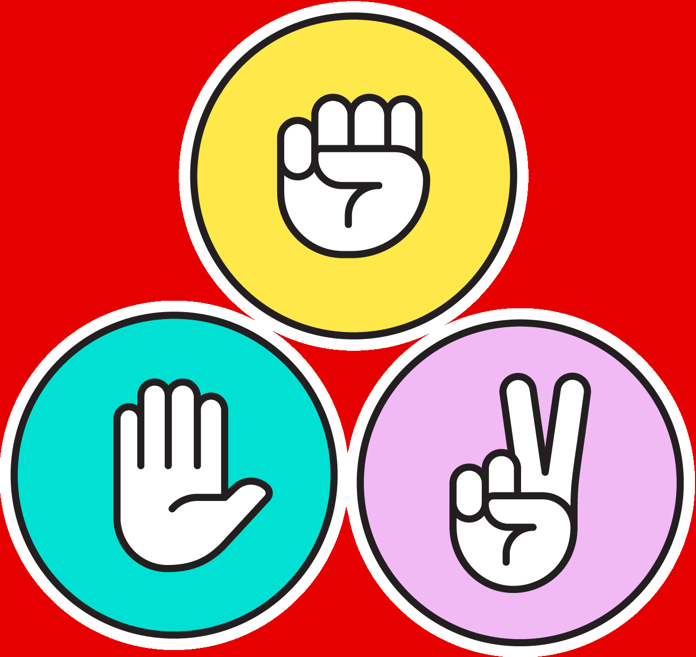

Março

No mês de março se iniciaram as aulas, a primeira atividade proposta foi uma lista de exercícios simples em Python (Raciocínio Algorítmico), seguida de uma lista de desafios de bases númericas (Fundamentos de Sistemas Ciberfísicos), uma atividade de Montaigne (Filosofia) e a entrega da primeira versão do GDD (Experiência Criativa). Todos esses projetos foram introdutórios ao curso e à programação, fornecendo uma base para os conhecimentos que viriam a seguir. No primeiro projeto de Experiência Criativa nos reunimos em grupos para criar um jogo, assim surgiu Dipper's Adventure: um jogo de plataforma onde o personagem do seriado Gravity Falls deveria salvar sua irmã e derrotar o vilão. Por fim, aprendemos sobre "if" e "else" em Python (Raciocínio Algorítmico) e realizamos uma atividade formativa sobre a máquina de Turing (Sistemas Ciberfísicos).
Abril
Em abril tivemos nossas primeiras provas (Sistemas Ciberfísicos, Filosofia, Lógica Matemática e Raciocínio Algorítmico), também realizamos a entrega e apresentação do jogo e fomos introduzidos aos loopings com "while" (Raciocínio Algorítmico). A partir da metade do mês aprendemos sobre Java no Processing (Experiência Criativa) e fizemos um boneco com essa linguagem de programação, também montamos grupos para o seminário de Filosofia e nos foi passado sobre o TDE de Arquitetura de Computadores RISC e CISC (Sistemas Ciberfísicos). Logo após, estudamos sobre memórias RAM e ROM, memórias secundárias, processamento e execução de programas e paralelismo (Sistemas Ciberfísicos). Nesse mês também formamos os grupos do projeto 2 de Experiência Criativa, fizemos listas de Lógica Matemática e entregamos o primeiro projeto colaborativo de Raciocínio Algorítmico: um JoKenPô em Python.
Maio

Maio chegou com a segunda avaliação de Sistemas Ciberfísicos e a entrega do projeto 2, no qual criamos um aplicativo em java destinado a crianças e jovens adolescentes baseado num quiz de astronomia. Ademais demos início ao TDE 3 de Sistemas Ciberfísicos e gravamos um vídeo explicando sobre sistemas operacionais e o Linux DSL. Ao longo do mês fizemos mais listas de Lógica Matemática e Raciocínio Algorítmico e ao final apresentamos o seminário de Filosofia e fomos introduzidos ao projeto 3 (Experiência Criativa), entregando a primeira versão de seu documento.
Junho
Finalmente, em junho realizamos as últimas listas (Lógica Matemática e Raciocínio Algorítmico), fizemos as últimas avaliações e os últimos trabalhos, que incluem: projeto 4 de Sistemas Ciberfísicos (sensor de umidade e temperatura em Micropython), TDE de Filosofia (vídeo entrevistando alguém da área de ciência da computação), projeto 3 de Experiência Criativa, TDE de Experiência Criativa e o segundo projeto colaborativo de Raciocínio Algorítmico (um jogo de Batalha Naval em Python).